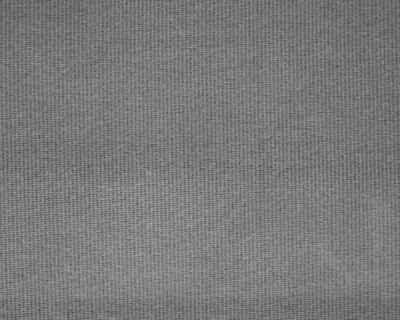
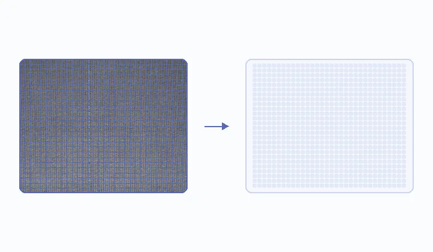
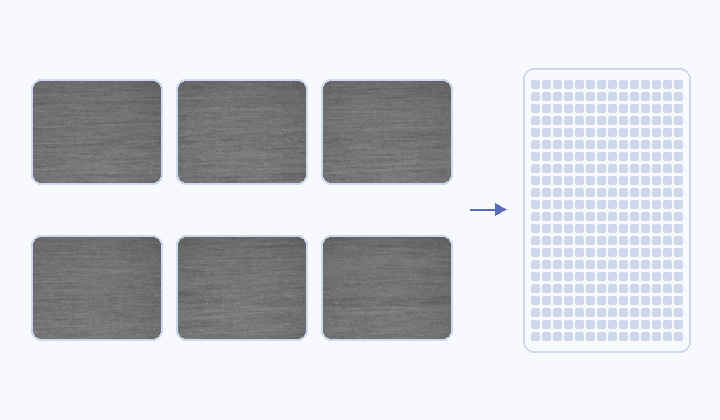

Time-ordered photos
Follow recorded fabric photos
in their original order.
SURFACETRACE · RECORDED RESULTS
OVERVIEW
Analyze anomalies and visual shifts in time-ordered fabric photos,
then connect human review to reference-candidate validation.
Follow recorded fabric photos
in their original order.
Within one photo,
find unusual regions against the reference.


Across many photos,
track overall appearance as it changes.
 →
→
Combine scores and shift signals
to suggest photos for review.
Check two photos first.
Expand to eight if needed.

Compare false alarms and defect detection before considering a change.
ORIGINAL SURFACETRACE
Extract visual features,
select a reference, and track anomalies and change.

AI supports field inspection and decisions; it does not decide every defect.Photo-level anomaly analysis and interval visual shift run independently; review results can support reference-candidate validation.
DATA & REFERENCE
Use time-ordered TSFabrics photos. DINOv2 is a frozen feature extractor, not a retrained model. Select startup reference photos without defect labels to build the reference bank.
DINOv2 weights stay frozen.
We build a feature bank for comparison.

Frozen DINOv2 ViT-S/14 · 448×364 input
Patches farther from the reference are highlighted as unusual.

Select startup photos and store 24 features per photo.
Scores from the next 1,536 photos calibrate the alert limit to 0.4708.
Each patch is scored by its cosine distance to the third-nearest reference feature. The photo score is the mean of the nine highest patch scores. The alert limit is the 99.5th percentile of calibration scores.
DESIGN CHOICES · DATA & REFERENCE
Keep the pretrained DINOv2 weights fixed and extract image features. Independently calculate patch-based unusualness and PCA groups from global image features for the same 512 photos, then combine them when selecting photos within each group.
For each of the initial 512 photos, compare its DINOv2 patch features with patch features from other photos using cosine similarity to calculate a photo-level unusualness score. Exclude patches from the query photo itself. Lower similarity to other photos means higher unusualness.
Project global image features from the 512 photos onto the first principal component of PCA and divide them into four groups using quartiles. Within each group, select the 60% with the lowest previously calculated unusualness scores. The resulting 308 photos provide 7,392 reference patch features.
FOUNDATION FEATURES
Compare handcrafted features with DINOv2 + selection on the same photo. Red highlights regions that differ more from the reference.
Score —
Score —
ANOMALY DETECTION · AUROC & AP
The current alert limit is 0.4708, calibrated from the 99.5th percentile of calibration scores. A score above this limit triggers a photo-level alert; it is not a defect probability.
AUROC measures discrimination between normal and defect scores.
| Metric | Handcrafted | DINOv2 + Selection |
|---|---|---|
| AUROC | 0.884 | 0.965 |
| Average Precision | 66.4% | 85.4% |
Both metrics: macro means over the same 4 defect-containing runs.
VISUAL SHIFT
Changes in material, lighting or camera conditions during production can make normal photos differ from the reference. We observe these changes separately from individual defects, helping operators check for changes in the production environment.
128-photo windows · Every 32 photos
Confirm after 3 consecutive MMD-limit exceedances
This test joins two different runs. A shift is confirmed at frame 96 of the new run.
CHANGE SIGNAL · DESIGN & VALIDATION
Compare overall feature distributions across many photos, separately from local defects in one photo.
Move the comparison window and update the shift score as new photos arrive.
Require consecutive exceedances so a single spike does not immediately trigger a confirmed shift.
RECORDED INTERVAL
People do not review every photo; AI prioritizes what to review. Score the full interval and use spacing to avoid repeatedly checking the same episode.
Candidates are selected by score rank.
They may include photos below the alert limit.
Check two photos first, then decide whether to request six more. Select a candidate to open the review stage.
REVIEW COVERAGE · WHY EIGHT SPACED CHECKS
We cap review at eight photos and compare selection rules under the same budget.
One defect can appear in several consecutive photos. Select photos spread out in time so that the same defect is not reviewed repeatedly.
Top 8 → Spaced 8
Different-setting subset, 2 defect runs: 7 → 12 episodes found · Post-hoc check
Gaps of 12 and 16 also tied at 20 episodes in the development runs. We kept 16 for wider time coverage. A gap of 32 could not fill all eight slots in the shortest run.
Original spacing results ↗LIMITED REVIEW
Reveal and record each result. Start with two checks and expand to eight when needed. Confirmed review results can support future reference-candidate validation.
This replay uses public dataset labels, not actual worker records.
Two normal checks end further review requests; they do not classify the entire interval as normal.
REVIEW WORKLOAD · WHY STAGED REVIEW
Stop if both results are normal. If either is defective or uncertain, request six additional checks.
New episodes found: 26 → 26
Normal photos reviewed: 101 → 29
A small initial review checks whether more inspection is needed before requesting all eight.
| Initial checks | Total requests | Episodes found |
|---|---|---|
| One-first candidate | 44 | 26 |
| Two-first rule | 56 | 26 |
| Three-first candidate | 68 | 26 |
The one-first candidate was not validated on the hard case of a defect run whose first selected photo is normal, so we retained the existing two-first rule.
Current reference preserved throughout
Add reviewed normal features to a copy.
Compare false alarms and defect detection.
This candidate: hold; retain the current reference.
REFERENCE VALIDATION
Preserve the current reference. Add reviewed normal features to a copy, then compare both references on the same later data. More accumulated data do not guarantee improvement.
Separate 15-run experiment · Eight fixed checks per run.
DINOv2 stays frozen. Automatic approval and real-time model retraining are not implemented.
Current referenceReviewed candidate
Candidate held. Current reference retained.
False alarms fell, but alerts on defect photos and distinct new defect episodes also declined.
This illustration shows a separate candidate selected without labels from 512 startup photos. It is a different experiment from the reviewed candidate summarized above.
QUALITY MANAGEMENT · HUMAN-IN-THE-LOOP
AI analyzes anomalies, people review the candidates, and review records support validation of possible reference changes.
26 newly found episodes retained in this staged-review evaluation
4 defect-containing runs · Macro mean
Same 4 runs · Macro mean
FROM ANALYSIS TO FIELD DECISIONS
Continuous production photos make it difficult to see where human attention is needed.
Help operators identify areas and appearance changes that need attention.
Spread high-scoring photos over time. Check two first, expand to eight when needed, and adjust further requests using confirmed results.
128 → 56 checks56.3% fewer requests
The 26 new defect episodes found by fixed-eight review were retained in this evaluation.
As production conditions change, newly collected data need validation before entering the inspection reference.
Keep the current reference. Add human-confirmed normal features to a copy, then assess the candidate on separate later data.
Check false alarms on normal photos together with actual defect detection. Retain the current reference if detection worsens.
False alarms fell, but actual defect detection also fell, so this candidate was held.
More data do not guarantee improvement. Review results support candidate generation and validation before an adoption decision.
Offline experiment: human review is replayed using public dataset ground truth.
Real TSFabrics photos · Recorded analysis replay · CC BY 4.0 Watch the original demo ↗